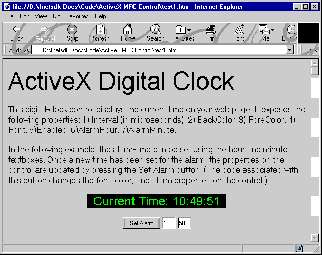

| ||||||
This article describes how a developer can add ActiveX® support to an existing OLE Automation control.
An ActiveX control is an object that supports a customizable, programmatic interface. Using the methods, events, and properties exposed by a control, Web authors can automate their HTML pages. Examples of ActiveX Controls include text boxes, command buttons, audio players, video players, stock tickers, and so on.
You can develop ActiveX Controls using Microsoft® Visual Basic® 5.0 and later, Microsoft® Visual C++®, and Java. This article focuses on controls developed with Visual C++. (For more information about developing controls with Visual Basic, see http://msdn.microsoft.com/vbasic/  ; for more information about developing controls with Java, see http://splash.javasoft.com/beans/javadoc/packages.html
; for more information about developing controls with Java, see http://splash.javasoft.com/beans/javadoc/packages.html  ).
).
Because ActiveX Controls are complex, Microsoft offers some tools that help a C++ developer create an ActiveX control. The following table describes these tools.
| Tool | Description | Ships with |
| Microsoft Foundation Class Library (MFC) | A set of C++ classes that support COM, OLE, and ActiveX (among other things). MFC provides the simplest means of creating ActiveX Controls. | Microsoft Visual C++ version 4.2 or later. (MFC ships with earlier versions of Visual C++; however, these versions do not support ActiveX.) |
| Microsoft ActiveX Template Library | A set of C++ templates designed to create small and fast COM objects. | ATL 2.1 ships with Microsoft Visual C++ version 5.0. (ATL 2.0 is a Web release that relies on the Microsoft Visual C++ 4.2 IDE.) |
This tutorial focuses on controls developed with MFC. It demonstrates how you can convert an existing OLE control into an ActiveX control. The tutorial is based on the sample MFC timer control that ships with Microsoft Visual C++ version 4.2 and later. The timer control supports a single event and a single property: It fires a Timer event at a user-specified interval (which corresponds to the control's Interval property). For the purpose of this tutorial, the timer control was converted into a digital alarm clock (which can be inserted into an HTML page using the OBJECT object).

The modifications to the sample timer control included:
To benefit from this tutorial, you should be familiar with COM (the OLE Component Object Model) and OLE Automation; in addition, you should know C++ and be familiar with the Microsoft Foundation Class Library (MFC).
This document contains the following sections.
| Section | Description |
| What Is an ActiveX Control? | Reviews the parts of an OLE control; in addition, it describes the new features that differentiate an ActiveX control from an OLE control. This section includes descriptions of topics such as security, run-time licensing, and packaging. |
| Porting the Timer Control | Describes the work required to convert the sample MFC timer control into a digital clock (with alarm functionality). It includes information about modifying the MFC OnDraw function, adding support for stock properties, adding support for custom properties, adding support for security, and so on. |
An ActiveX control is an OLE control that supports additional ActiveX features. This section reviews the architecture of an OLE control and then describes those additional ActiveX features (such as safety, run-time licensing, digital certificates, packaging the control, and so on).
At a minimum, an OLE control is a COM object that supports the IUnknown and IClassFactory (or IClassFactory2) interfaces. As stated, support for these interfaces is the minimal requirement for an OLE control; however, in order to do any meaningful work, an OLE control also supports a number of other interfaces that provide features such as writing persistent data to disk, supporting automation (methods, events, and properties), and supporting a user interface for the control.
The following table describes the interfaces that can be supported by an OLE control.
| Interface | Description |
| IOleObject | Supports communication between container and the control. |
| IOleInPlaceObject | Supports in-place activation. |
| IOleControl | Supports mnemonics and ambient properties. |
| IDataObject | Supports data transfer (emulates DDE and the Windows® clipboard). |
| IViewObject2 | Supports functions that a container uses to render the control. |
| IDispatch | Supports a control's methods and properties. |
| IConnectionPointContainer | Supports a control's events or property-change notifications. |
| IProvideClassInfo2 | Supports functions that a container calls in order to obtain a pointer to the control's type information. |
| ISpecifyPropertyPages | Supports functions that a container calls to determine the extent of a control's property-page support. |
| IPerPropertyBrowsing | Supports functions that allow containers to retrieve individual control properties. |
| IPersist* | Includes six interfaces that support functions that enable a control to read or write its persistent data to storage, stream, or file. |
| IOleCache2 | Supports the functions that a container calls in order to cache a control's data. |
| IExternalConnection | Supports functions that a control uses to track external connections. |
| IRunnableObject | Supports functions that a container uses to determine whether a control differentiates between a "loaded" and a "running" state. |
As the previous list notes, the IPersist* interfaces support functions that allow a control to read or write its persistent data to storage, stream, or file. The following list identifies these interfaces and their purpose.
| Interface | Purpose |
| IPersistMemory | Saves and loads the control's data into a fixed-length sequential byte array (in memory). |
| IPersistStorage | Saves and loads the control's data into an IStorage instance. Controls that want to be marked "Insertable" as other compound document objects (for insertion into non-control-aware containers) must support this interface. |
| IPersistPropertyBag | Saves and loads the control's data as individual properties written to IPropertyBag, which the container implements. This is used for "Save As Text" functionality in some containers. |
| IPersistMoniker | Saves and loads the control's data to a location named by a moniker. The control calls IMoniker::BindToStorage to retrieve the storage interface it requires, such as IStorage, IStream, ILockBytes, IDataObject, and so on. |
For more information about any of these interfaces, refer to the OLE core documentation that ships with the Platform SDK.
An ActiveX control is an OLE control that supports several additional features. These features include:
When a control is initialized, it can receive data from an arbitrary IPersist* interface (from either a local or a remote URL) for initializing its state. This is a potential security hazard because the data could come from an untrusted source. Controls that guarantee no security breach regardless of the data source are considered safe for initialization.
There are two methods for indicating that your control is safe for initialization. The first method uses the Component Categories Manager to create the appropriate entries in the system registry. Internet Explorer examines the registry prior to loading your control to determine whether these entries appear. The second method implements an interface named IObjectSafety on your control. If Internet Explorer determines that your control supports IObjectSafety, it calls the IObjectSafety::SetInterfaceSafetyOptions method prior to loading your control in order to determine whether your control is safe for initialization.
For more information about identifying a control as safe for initialization using the Component Categories Manager, see Using the Component Categories Manager. For more information about identifying a control as safe for initialization using IObjectSafety, see Supporting the IObjectSafety Interface.
Code signing can guarantee a user that code is trusted. However, allowing ActiveX Controls to be accessed from scripts raises several new security issues. Even if a control is known to be safe in the hands of a user, it is not necessarily safe when automated by an untrusted script. For example, Microsoft Word is a trusted tool from a reputable source, but a malicious script can use its automation model to delete files on the user's computer, install macro viruses, and worse.
Just as there are two methods for indicating that your control is safe for initialization, so there are two methods for identifying a control as safe for scripting. The first method uses the Component Categories Manager to create the appropriate entries in the system registry (when your control is loaded). Internet Explorer 3.0 and later examines the registry prior to loading your control to determine whether these entries appear. The second method implements the IObjectSafety interface on your control. If Internet Explorer determines that your control supports IObjectSafety, it calls the IObjectSafety::SetInterfaceSafetyOptions method prior to loading your control in order to determine whether your control is safe for scripting.
For more information about identifying a control as safe for scripting using the Component Categories Manager, see Using the Component Categories Manager. For more information about identifying a control as safe for scripting using IObjectSafety, see Supporting the IObjectSafety Interface.
Most Microsoft ActiveX Controls should support design-time licensing and run-time licensing. (The exception is the control that is distributed free of charge.) Design-time licensing ensures that a developer is building his or her application or Web page with a legally purchased control; run-time licensing ensures that a user is running an application or displaying a Web page that contains a legally purchased control.
Design-time licensing is verified by control containers such as Microsoft Visual Basic, Microsoft Access, or Microsoft Visual InterDev™. Before these containers allow a developer to place a control on a form or Web page, they first verify that the control is licensed by the developer or content creator. These containers verify that a control is licensed by calling certain functions in the control: If the license is verified, the developer can add it.
Run-time licensing is also an issue for these containers (which are sometimes bundled as part of the final application); the containers again call functions in the control to validate the license that was embedded at design time.
Microsoft Internet Explorer is another type of container. Like the other containers, Internet Explorer 4.0 and later also calls functions in the control to verify that it is licensed. However, unlike Visual Basic or Microsoft Access, which embed ActiveX Controls within the binary code of their application's executable files, Internet Explorer 4.0 and later uses a different model. This unique model is a necessary response due to:
Because any user with Internet Explorer 4.0 or later can view the HTML source code for a given Web page, and because an ActiveX control is copied to a user's computer before it is displayed, a level of indirection is required to "hide" the license for an ActiveX control from the user. This prevents users from pirating and reusing controls that they did not purchase. Microsoft addresses these run-time licensing issues with a new file called the license package file (or LPK file). This file can be included in any HTML page by using the OBJECT object. For more information about .lpk files, their use, and their format, see The License Package File.
The functions that support run-time licensing are members of the IClassFactory2 interface. Any ActiveX control that supports run-time licensing must support and implement this interface (an extension of the IClassFactory interface).
For more detailed information about implementing run-time licensing for an ActiveX control, see Run-Time Licensing.
Microsoft supports a data-compression technology and associated toolset that you can use to package your ActiveX control for faster, more efficient downloading over the Internet or an intranet. (This same technology and toolset can be applied to Microsoft Win32® applications, Java classes, and Java libraries.)
Cabinet files
For a number of years, Microsoft used cabinet (.cab) files to compress software that was distributed on disks. Originally, these files were used to minimize the number of disks shipped with packaged product; today, .cab files are used to reduce the file size and the associated download time for Web content that is found on the Internet or corporate intranet servers.
The cabinet file format
The .cab file format is a nonproprietary compression format, also known as MSZIP, that is based on the Lempel-Ziv data-compression algorithm. (At a future date, other compression formats might also be supported.)
For information about Cabarc.exe, the tool you can use to compress your ActiveX control, see Cabarc.exe.
For a description of the HTML tags required to access a control contained in a cabinet file, see Accessing Controls Stored in Cabinet Files.
When a user's security setting is at the default level for Internet Explorer 4.0 and later, any object identified by the OBJECT object on an HTML page must be digitally signed. Digital signatures are created using Microsoft Authenticode™ technology, a set of developer tools that can be downloaded from MSDN Online. A digital signature associates a software vendor's name and a unique public key with a file that contains an ActiveX object (ensuring some sort of accountability on the part of the object's developer).
Before you purchase a certificate for your control's .cab file from a vendor, you can use the test certificate provided by Microsoft for verification purposes.
For a description of how you can add a digital certificate to your control's .cab file, see Signing Code with Microsoft Authenticode Technology.
The original OLE timer control was an ideal starting point for a digital clock example: existing code was already in place to handle the firing of an event at a user-specified interval. The remaining work required the addition of:
The following sections describe how clock-like features were added to the timer control.
As noted earlier in the Description of an OLE Control section, IViewObject is one of the interfaces commonly supported by an OLE control. This interface supports functions that a container calls to draw a control, to retrieve the logical palette used by a control, and to temporarily freeze the current view of the control.
MFC wraps the IViewObject functions in the COleControl class. These functions are defined in the Ctlview.cpp file. The COleControl::XViewObject::Draw function contains most of the functionality typically found in an implementation of IViewObject::Draw; this functionality includes:
To draw the control, COleControl::XViewObject::Draw calls the COleControl::DrawContent member function, which is found in Ctlcore.cpp. This function maps logical coordinates into device coordinates. Once the coordinates are converted, COleControl::DrawContent calls COleControl::OnDraw to actually render the control. COleControl::OnDraw must be overridden by the control developer in the source code, which is generated by the OLE Control wizard. The default version of COleControl::OnDraw simply draws an ellipse. The following excerpt shows the code provided by the OLE Control wizard.
/////////////////////////////////////////////////////////////////////////////
// CTimeCtrl::OnDraw - Drawing function
void CTimeCtrl::OnDraw(
CDC* pdc, const CRect& rcBounds, const CRect& rcInvalid)
{
// TODO: Replace the following code with your own drawing code.
pdc->FillRect(rcBounds, CBrush::FromHandle((HBRUSH)GetStockObject(WHITE_BRUSH)));
pdc->Ellipse(rcBounds);
}
Most of the code required to convert the sample timer control into a digital clock is actually found in the OnDraw function. This includes code that:
The entire OnDraw function from the Timectl.cpp file appears below.
/////////////////////////////////////////////////////////////////////////////
// CTimeCtrl::OnDraw - Drawing function
void CTimeCtrl::OnDraw(
CDC* pdc, const CRect& rcBounds, const CRect&)
{
// Variables required for text output.
CFont* pOldFont;
TEXTMETRIC tm;
char tText[30];
CString strTime;
CRect rc = rcBounds;
CBrush bkBrush(TranslateColor(GetBackColor()));
// Variables required for alarm handler.
time_t aclock; // elapsed time in seconds since 00:00:00 on
// 1/1/1970
struct tm *now; // time structure (contains useful time data)
BOOL bTest;
// Set the foreground color property and the transparent bk mode.
pdc->SetTextColor(TranslateColor(GetForeColor()));
pdc->SetBkMode(TRANSPARENT);
// Paint the background using the BackColor property.
pdc->FillRect(rcBounds, &bkBrush);
// Retrieve the time, check the alarm, package a string
// specifying the time.
time(&aclock); // retrieve elapsed time in seconds
now = localtime(&aclock); // convert elapsed seconds to
// meaningful data
// Examine the alarm properties.
if ((now->tm_hour == m_alarmHour) && (now->tm_min == m_alarmMinute))
if (bAlarm == TRUE)
{
bTest = PlaySound((const char*)IDR_WAVE3, AfxGetResourceHandle(),
SND_RESOURCE);
bAlarm = FALSE;
}
// Package time for rendering.
sprintf(tText, "Current Time: %.8s\n", asctime(now)+11);
strTime = tText;
// Draw the time string.
pOldFont = SelectStockFont(pdc);
pdc->GetTextMetrics(&tm);
pdc->SetTextAlign(TA_CENTER | TA_TOP);
pdc->ExtTextOut((rc.left + rc.right) / 2, (rc.top + rc.bottom -
tm.tmHeight) / 2, ETO_CLIPPED, rc, strTime, (strTime.GetLength())
-1, NULL);
// Reselect the old font and brush.
pdc->SelectObject(pOldFont);
}
As noted in the previous section that describes the OnDraw function, the current time is rendered by using the background color, foreground color, and font properties that the user selected. These properties are three of the nine stock properties supported by the COleControl class. The following list identifies the nine supported stock properties:
Support for the three stock properties was added using the ClassWizard. For example, support for the background color property was added through the following steps when the control's project was open in Microsoft Visual C++:
When support for a stock property is added using the ClassWizard, the control's implementation file (Timectl.cpp in the case of the sample) and the control's object description (.odl) file (Timectl.odl) are updated. In the case of the sample control's implementation file, the following line was added to the control's dispatch map:
DISP_STOCKPROP_BACKCOLOR()
In the case of the sample control's object description file, the following line was added:
[id(DISPID_BACKCOLOR), bindable, requestedit] OLE_COLOR BackColor;
After support for the stock properties was added to the sample control, these properties were available for drawing operations. The background color was retrieved by calling the GetBackColor function and applying the result to a background brush variable (bkBrush) as follows:
CBrush bkBrush(TranslateColor(GetBackColor()));
As noted in the Adding Support for Color and Font Properties section, COleControl supports nine stock properties that are common to most ActiveX Controls. However, invariably a control requires custom properties such as the Alarm properties that are supported by the digital clock control.
There are four types of custom properties: member variables, member variables with notification, get/set methods, and parameterized. The sample digital-clock control supports three custom properties (each of which falls into the category of member variables with notification). These properties are the AlarmHour, AlarmMinute, and Interval. The AlarmHour property specifies the hour at which the alarm should trigger; the AlarmMinute property specifies the minute at which the alarm should trigger; and the Interval property specifies the interval (in milliseconds) for updating the clock that's displayed by the control. When the user resets any of these custom properties, a notification function is called to handle any work necessitated by those changes.
The MFC framework supports COleControl::DoPropExchange to load or store persistent data for a control. This function normally makes calls to the PX_ family of functions to load or store specific user-defined properties. The sample control takes advantage of the MFC property-exchange functionality to save and load the custom interval and alarm properties.
/////////////////////////////////////////////////////////////////////////////
// CTimeCtrl::DoPropExchange - Persistence support
void CTimeCtrl::DoPropExchange(CPropExchange* pPX)
{
ExchangeVersion(pPX, MAKELONG(_wVerMinor, _wVerMajor));
COleControl::DoPropExchange(pPX);
long nInterval = m_interval;
short sAlarmHr = m_alarmHour;
short sAlarmMin = m_alarmMinute;
PX_Long(pPX, _T("Interval"), m_interval, DEFAULT_INTERVAL);
if (pPX->IsLoading())
{
if (nInterval != m_interval)
OnIntervalChanged();
}
PX_Short(pPX, _T("AlarmHour"), m_alarmHour, DEFAULT_HOUR);
if (pPX->IsLoading())
{
if (sAlarmHr != m_alarmHour)
OnAlarmHourChanged();
}
PX_Short(pPX, _T("AlarmMinute"), m_alarmMinute, DEFAULT_MINUTE);
if (pPX->IsLoading())
{
if (sAlarmMin != m_alarmMinute)
OnAlarmMinuteChanged();
}
}
In the case of the AlarmHour property, when the OnAlarmHourChanged function is called, a global Boolean variable (bAlarm) is set to TRUE, and the COleControl::SetModifiedFlag function is called to notify the container that the control's persistent state has changed.
void CTimeCtrl::OnAlarmHourChanged()
{
bAlarm = TRUE;
SetModifiedFlag(TRUE);
}
The global variable (bAlarm) is examined within the COleControl::OnDraw function to ensure that the alarm should be triggered at the specified time.
// Examine the alarm properties.
if ((now->tm_hour == m_alarmHour) && (now->tm_min ==
m_alarmMinute))
if (bAlarm == TRUE)
{
bTest = PlaySound((const char*)IDR_WAVE3, AfxGetResourceHandle(),
SND_RESOURCE);
bAlarm = FALSE;
}
As this code excerpt shows, the alarm sounds when the PlaySound function is called. This function takes three arguments: the first (IDR_WAVE3) is a resource identifier; the second is an instance handle for the control's resources; and the third is a flag specifying that the sound is a resource.
The current alarm sound (a ringing phone) was inserted into the sample control's DLL to ensure that the alarm would activate on any system that supported audio output. This .wav file was inserted using the Insert Resource dialog box.
The sample control uses the Component Categories Manager to identify its safety features. For sample code demonstrating how this support was implemented, see Registering a Control as Safe.
The sample control supports run-time licensing for most containers through the IClassFactory2 interface. However, when Internet Explorer is the container, it's also necessary to generate an .lpk file as part of the run-time licensing scheme.
For more information about run-time licensing and .lpk files, see Run-Time Licensing for Internet Explorer 4.0 and later.
For more information about using LPKTool.exe to create an .lpk file for a control, see Appendix A: Generating a License Package with LPK_TOOL.
The sample control was compressed using Cabarc.exe, a tool provided as part of the Internet Client SDK. For a description of this process, see Packaging the Sample ActiveX Control.
For testing purposes, a digital certificate was added to the sample control's .cab file using several tools shipped with the Internet Client SDK. For a description of this process, see Signing the .cab File.
Did you find this topic useful? Suggestions for other topics? Write us!
© 1999 Microsoft Corporation. All rights reserved. Terms of use.